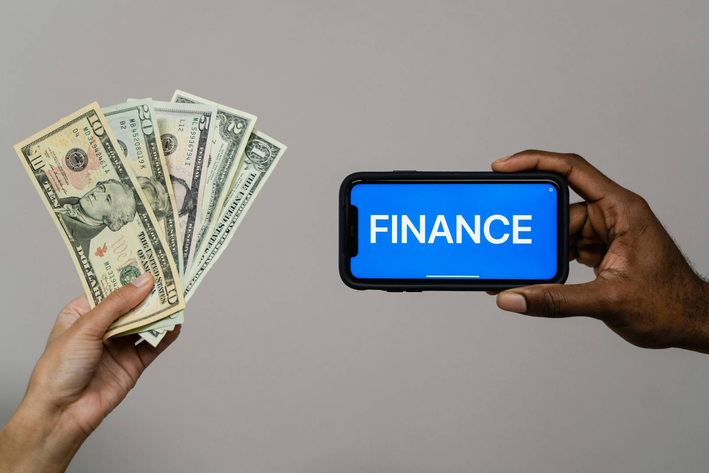

Por Francisco Urrego
Actualizado el 12 feb 2026 | 11:09 h
⏱ 5 min lectura

- 1. Comprendiendo las deudas de libre inversión
- 2. Identifica las tasas y condiciones antes de solicitar
- 3. Evalúa tu capacidad de pago real
- 4. Evita endeudarte por necesidades innecesarias
- 5. Considera alternativas antes de endeudarte
- 6. Mantén disciplina en pagos y seguimiento
- 7. Prevención y control financiero
Comprendiendo las deudas de libre inversión
Las deudas de libre inversión son básicamente créditos que los bancos en Colombia te dan sin que tengas que decirles exactamente en qué los vas a usar. Puedes comprar algo grande, invertir en un proyecto o simplemente cubrir gastos imprevistos. Suena flexible y hasta cómodo, ¿verdad? Pues sí, pero ojo: esa libertad viene con un precio. Normalmente, estas deudas tienen tasas más altas que, por ejemplo, un crédito hipotecario o uno de vehículo.
Y aquí es donde mucha gente mete la pata: toman el dinero pensando “lo pagaré después” y terminan con intereses que crecen más rápido que la deuda original. Por eso es importante no solo entender cómo funcionan, sino también planear cómo vas a pagarlas. Llevar un control de tus cuotas, calcular tu capacidad de pago y priorizar tu presupuesto puede hacer la diferencia entre una herramienta útil o un problema que te quite tranquilidad.
En resumen, las deudas de libre inversión pueden ser un aliado si las usas con cabeza, pero sin disciplina y estrategia, se vuelven una bola de nieve que arruina tus finanzas. La clave está en conocer los riesgos, planear y nunca subestimar el impacto de los intereses.
Identifica las tasas y condiciones antes de solicitar
Antes de lanzarte a solicitar una deuda de libre inversión, vale la pena hacer la tarea y mirar bien todas las letras pequeñas. No es raro que alguien se emocione con la idea del dinero rápido y después se lleve la sorpresa de tasas altas, comisiones escondidas o plazos que no le convienen. Lo ideal es tomarte tu tiempo y comparar opciones: tasas, plazos, seguros y cualquier otro cargo que pueda aparecer.
- Consulta al menos tres bancos diferentes para ver quién te ofrece las mejores condiciones. No te quedes con la primera opción que te den, créeme, eso puede costarte caro.
- Pide la tasa efectiva anual (TEA) y la tasa de interés nominal. Suena técnico, pero esto te dice el costo real de la deuda y evita sorpresas.
- Revisa si hay costos adicionales: seguros obligatorios, comisiones de apertura o gastos administrativos que aumenten la cuota mensual sin que lo esperes.
Hacer este ejercicio antes de firmar cualquier cosa te ayuda a no comprometer tu presupuesto y a no caer en deudas que luego se vuelven difíciles de manejar. Sí, puede ser un poco tedioso, pero te aseguro que vale la pena y evita dolores de cabeza después.
Recuerda: la diferencia entre una deuda que te ayuda y una que te agobia muchas veces está en los detalles que la mayoría pasa por alto.
Evalúa tu capacidad de pago real
Antes de lanzarte a cualquier deuda de libre inversión, tómate un tiempo para hacer cuentas de verdad. No solo veas cuánto te presta el banco, sino cuánto puedes pagar cada mes sin quedarte corto para lo básico. Muchos caen en la trampa de aceptar cuotas grandes porque el dinero parece “fácil”, y luego llegan los sustos cuando aparecen imprevistos.
- Define un monto máximo que puedas destinar al crédito sin comprometer cosas esenciales: alimentación, transporte, servicios y educación.
- Recuerda que los pagos incluyen intereses y, si te retrasas, esos intereses se acumulan y suben la deuda más rápido de lo que uno espera.
- Agrega siempre un pequeño margen de seguridad para emergencias: salud, reparaciones, imprevistos que siempre aparecen y nadie avisa.
En Colombia es muy común que la gente acepte cuotas altas solo por la facilidad del crédito, pero ojo, eso puede generar sobreendeudamiento y presión financiera innecesaria. Mejor tener un plan realista y estar tranquilo, que después lamentar haberse comprometido más de lo que se podía.
Hazlo como si fuera tu presupuesto diario: si no cabe, no lo aceptes. Así de simple.
Evita endeudarte por necesidades innecesarias
Una de las razones más comunes por las que la gente termina con deudas de libre inversión altas es usar los créditos para cosas que en realidad no son necesarias. Es tentador comprar lo último en tecnología, ropa o viajes financiados, pero muchas veces solo se genera estrés financiero. Antes de pedir un crédito, pregúntate: “¿De verdad lo necesito ahora o puedo esperar y ahorrar un poco?”.
- Postergar compras de lujo hasta tener suficiente ahorro para cubrirlas sin recurrir a deuda. Sí, duele esperar, pero es mucho menos doloroso que pagar intereses eternamente.
- Usar tarjetas de crédito solo para emergencias o gastos planificados que ya están dentro del presupuesto, evitando compras impulsivas que luego pesan en el bolsillo.
- Explorar préstamos familiares, amigos o cooperativas como alternativas con tasas más bajas, sin complicaciones de bancos y sin endeudarse más de lo necesario.
Adoptar esta mentalidad puede parecer aburrido al principio, pero a la larga te da control sobre tus finanzas, tranquilidad y evita la ansiedad de deudas que parecen imposibles de manejar.
La clave está en pensar dos veces antes de endeudarte y ser honesto contigo mismo sobre lo que realmente necesitas versus lo que solo quieres.
Considera alternativas antes de endeudarte
Antes de lanzarte a pedir un crédito de libre inversión, vale la pena mirar otras opciones para cubrir lo que necesitas. Muchas veces con solo ajustar un poco el presupuesto, retrasar la compra unas semanas o ahorrar de forma planificada, se puede evitar pagar intereses exagerados y complicarte la vida.
- Ahorrar progresivamente antes de la compra o inversión. Sí, suena obvio, pero funciona mucho mejor que pagar intereses altos que no te dejan respirar.
- Aprovechar descuentos, promociones o pagos diferidos sin interés que ofrecen comercios o proveedores. Es sorprendente cuánto se puede ahorrar si uno se pone a buscar un poco.
- Optar por créditos específicos con tasas más bajas en vez de un crédito de libre inversión general. Por ejemplo, un crédito educativo o para vivienda suele tener mejores condiciones que el libre uso, dependiendo del caso.
Hacer este ejercicio te da claridad, evita sorpresas y te permite tomar decisiones financieras más inteligentes sin comprometer tu flujo de caja mensual. Es como pensar antes de saltar: menos estrés, más control.
La idea es simple: antes de endeudarte, mira todas las opciones reales, aunque tarden un poco más, y evita pagar más de lo necesario.
Mantén disciplina en pagos y seguimiento
Una vez que tengas la deuda, la clave está en no descuidarla. Mantener disciplina en los pagos no solo evita intereses moratorios que se acumulan rápido, sino que también protege tu historial crediticio y tu tranquilidad.
- Programa pagos automáticos desde tu cuenta bancaria o app, así no dependes de la memoria y evitas retrasos que duelen después.
- Lleva un registro mensual, aunque sea en un papel o Excel casero, del saldo pendiente, las cuotas y lo que ya pagaste. Verlo claro ayuda un montón.
- Evita meterte en nuevas deudas mientras esta no esté controlada. Sí, a veces la tentación de otra tarjeta es fuerte, pero esto es trampa segura para complicarte la vida.
Hacer esto te da control real sobre tu dinero, reduce el estrés mensual y demuestra a los bancos que eres responsable, lo que puede abrirte mejores opciones en el futuro.
Al final, la disciplina no es aburrida, es lo que te permite dormir tranquilo sabiendo que no te van a llegar sorpresas desagradables en la cuenta.
Prevención y control financiero
Evitar caer en deudas de libre inversión con intereses altos no es solo cuestión de suerte; requiere planificación y un poquito de sentido común. Conocer las tasas, entender cómo funcionan los intereses y tener disciplina en tus gastos te ahorra muchos dolores de cabeza.
- Revisa siempre las condiciones del crédito antes de firmar, y si algo no te cuadra, pregunta o busca otra opción. Nada peor que firmar algo que después te asfixia.
- Mantén un presupuesto actualizado, aunque sea en papel o en tu celular, incluyendo ingresos, gastos fijos y esos gastos “chiquitos” que parecen inofensivos pero suman rápido.
- Antes de endeudarte, evalúa si realmente necesitas ese dinero y prioriza ahorrar para gastos que puedes planear. Muchas veces un mes más de ahorro evita intereses que después pesan como ladrillos.
Si aplicas estas estrategias, no solo evitas estrés financiero, también construyes hábitos que te permiten manejar tu dinero con cabeza y mantener estabilidad económica a largo plazo, sin sorpresas desagradables.
La idea es simple: un poco de planificación hoy te salva de problemas mañana. Y créeme, tu yo del futuro te lo agradecerá.
Código Millonario recomienda: